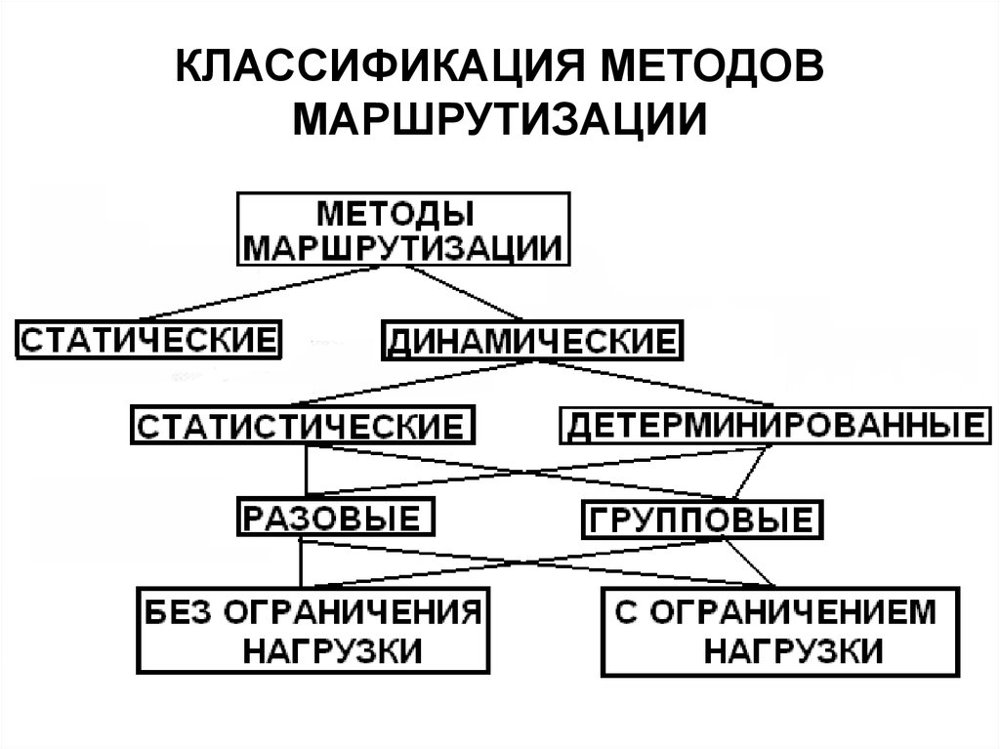

Методы адаптивной маршрутизации
Адаптивная маршрутизация использует алгоритмы для динамического выбора маршрута:
Классификация методов
- Алгоритмы маршрутизации с состоянием канала
- Протоколы динамической маршрутизации
- Методы уменьшения задержек

Назад на главную страницу